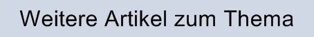
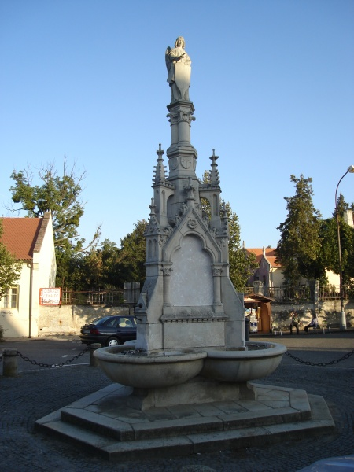
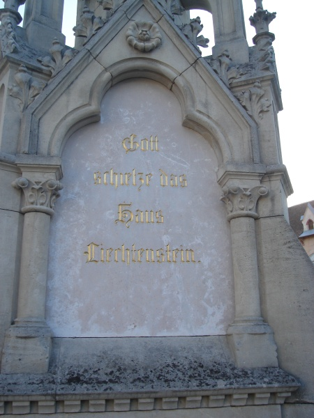

|  |
Das 40jährige Regierungsjubiläum des Fürsten Johann II.
(E. Reichel: Johann II. Fürst von und zu Liechtenstein, sein Leben und Wirken. Eisgrub 1932.)
Ein Markstein im Leben des heimgegangenen Fürsten Johann II. war sein 40jähriges Regierungsjubiläum. Ganz nach seiner stillen Art wurde auch das Fest in stiller einfacher Weise gefeiert, trotzdem waren aber alle Kundgebungen zu Ehren des Fürsten von großer Wärme und Herzlichkeit.
Den Jubiläumstag selbst verbrachte Johann II. zurückgezogen mit seinem Bruder Franz, dem damaligen österreichisch-ungarischen Botschafter am Zarenhofe in Petersburg, mit seinen Schwestern Louise Gräfin Fünfkirchen und Henriette Fürstin von und zu Liechtenstein, mit seinen Neffen, den Prinzen Johannes, Heinrich, Karl und Georg von und zu Liechtenstein, sowie seinem Freunde dem Grafen Max Hardegg auf Schloß Eisgrub. Alle ihm damals zugedachten Ehrungen und Ovationen hatte er abgelehnt, doch sind ihm damals aus Anlaß der Feier trotzdem viele hunderte Glückwünsche, Dankschreiben und Adressen von Gemeinden, humanitären Vereinigungen und Instituten, die er mit freigebiger Hand stets gefördert hatte, zugekommen. Eine besondere Ehrung bereitete ihm der „Mährisch-schlesische Forstverein“, dessen Ehrenmitglied der Fürst war, mit der Überreichung einer kunstvoll ausgestatteten Adresse.
Die einzige Anordnung, die Fürst Johann II. für diesen Tag gegeben hatte, war, daß in allen Patronatskirchen Seelenämter für seinen verstorbenen Vater, den Fürsten Aloys II. abzuhalten seien. Ein solches Seelenamt fand auch in Wien in der Schottenkirche statt, dem alle Beamten der Liechtensteinischen Hofkanzlei beiwohnten.
Die Errichtung eines Jubiläumsbrunnens in Eisgrub
Das 40jährige Regierungsjubiläum des Fürsten gab seiner Geburtsgemeinde Eisgrub Anlaß, Johann II. für seine vielfach erwiesenen Wohltaten durch eine Ehrung zu danken. Ein Vorschlag des damaligen fürstlichen Bauamtsdirektors und späteren Professors der Deutschen Technik in Prag Karl Weinbrenner, einen Brunnen mit einem Porträtmedaillon am Marktplatz zu errichten, wurde vom Gemeinderate angenommen und kam auch zur Ausführung.
Der Fürst, den man von dieser Absicht unterrichtete, ließ darauf folgendes erwidern: „Obwohl ich im allgemeinen für meine Bestrebungen eine öffentliche Anerkennung nicht beanspruche, so vermag ich doch nicht, mich diesem Wunsche, in welchem ich eine Kundgebung freundlicher Gesinnung und Erkenntlichkeit für dasjenige, was ich für meinen Geburtsort getan habe, erblicke, zu widersetzen und benütze den gegenwärtigen Anlaß, die Gemeinde Eisgrub der Fortdauer meines herzlichen Wohlwollens zu versichern.“
Auf Grund dieses Schreibens hat die Gemeinde Eisgrub den 40. Jahrestag des Regierungsantrittes Johann II. als den Tag bestimmt, an dem dieses Denkmal enthüllt wurde. Der Platz um den Brunnen wurde für die Feier mit Girlanden und grünumsponnenen Säulen abgesperrt und innerhalb desselben eine Tribüne für die Mitglieder des fürstlichen Hauses aufgestellt. Nach einem feierlichen Hochamt in der Schloßkirche zogen alle Vereine mit der Geistlichkeit nach dem Festplatze. Als die Mitglieder des fürstlichen Hauses sich dem Denkmal näherten, begann eine Musikkapelle die Liechtensteinsche Volkshymne zu spielen, worauf die Einweihung des Brunnens erfolgte. Dann hielt Bürgermeister Anton Reck eine Ansprache, die in ein dreimaliges Hoch auf den größten Wohltäter der Gemeinde, den Fürsten Johann II. ausklang. Die Versammelten begaben sich nun zum Schlosse, wo sie der Fürst erwartete. Hier huldigte die dankbare Gemeinde Eisgrub dem Fürsten, worauf die Feier mit einem dreifachen Hoch geschlossen wurde.
Der Brunnen, der in gotischem Stile ausgeführt ist, stellt eine dreieckige Säule dar, die mit Türmchen verziert ist. Auf der einen Seite trägt sie das Porträtmedaillon mit dem Namenszug des Fürsten, auf der zweiten in einer Marmortafel die Inschrift: „Gott segne das Haus Liechtenstein“ und auf der dritten Seite die Worte: „Die Gemeinde Eißgrub ihrem größten Wohltäter, dem Fürsten Johann II., 1858 bis 1898“. An der Spitze ist die meisterhaft ausgeführte Figur eines Schutzgeistes angebracht, der schützend das Wappen des Hauses Liechtenstein festhält; der Entwurf des Brunnens stammt von Professor Karl Weinbrenner.



Jubiläumsbrunnen in Eisgrub.